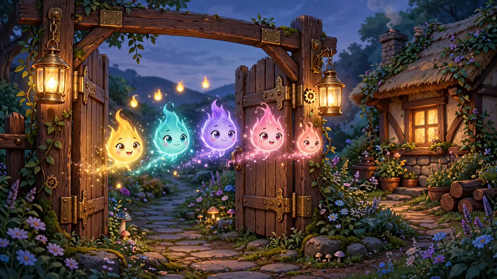

A Spark of your own
A Spark is a small companion that lives here, on this device. It is not picked from a shelf. It is made at the moment you meet it, out of today’s place in Living Time — and, if you meet it on this page, a few answers only you would give — so no two Sparks are alike. Its seed even speaks its name, and no two move, glow, or grow quite the same way. You may already have met yours: a Spark pops up wherever you first arrive on the site, introduces itself, and one tap adopts it. This page is its home — the record of its growth lives here. It keeps you company as you read, return, and practice, and it grows as you do.
Today, in Living Time

Watch · Sparks — the trailer
A quiet trailer, filmed on this live site. Darkness first: the Sphere turning slowly, a Spark lighting in the dark and given a name, dawn on the day line, one garden tended, the Sphere opening to full screen, a phone glowing at night with the Spark living in it — and the horizon still to come. No narration. The sound is a soft bed of tones in the 432 family, synthesized for this film, with the Spark’s chirps woven in; the Spark’s own voice is live on the site. Press play.
Meet your Spark
Three short questions first — or skip them entirely and wander: your Spark will pop up wherever you land and introduce itself, and one tap there adopts it just the same. There are no wrong answers — the questions simply lean your Spark toward one of the six kinds: Fire, Water, Shadow, Air, Earth, or Light. Today’s Moon and Pattern Day lean too. If you told a Spark “not now” somewhere, it is waiting as a small ember at the edge of the page — tap it whenever you are ready, or meet it here.
Every Spark arrives with a name of its own, grown from its seed — the same seed speaks the same name anywhere. If you give it a name of your own, that is the name it will answer to. You can change it, or clear it, later.
Meet it by ear first: press play, hear the one tone it sings, then tap the pad that sang it.
Play: the echo game
Your Spark sings a few notes on the four pads; tap the same pads back in the same order.
Bring your Spark — the passport
A Spark is one and the same on every door of the Codex — the one in the Living Day app on your phone and the one on this page are not two Sparks. Until accounts arrive, a Spark travels by passport: a short code that carries its seed and the name it answers to, and nothing else — no days, no garden, no record. Type the code from the app (in the app, open Their Home and find “Its passport”), or scan it, and your own Spark moves in here, grown from the same seed, the same in name, kind, and look. Its whole history still travels the older way, as one file, under “Their record travels” below.
The passport of the Spark who lives here
Type this code into the app — or into this page on another device — and the same Spark stands there. Whoever holds the code can raise this Spark, so keep it the way you keep a key.
Bring a Spark here
A Spark raised on this device was set gently aside when yours moved in — its record is kept whole, untouched, and it can come back.
Their Home
This is where your Spark lives: a small world of its own, and everything standing in it was put there by your real days on this site. The path grows a stone for every day you have kept together. The shelf holds the keepsakes your Spark has found. The thirteen beds around the house grow what the Pattern Garden says they grow. The house itself grows as your Spark grows. Nothing here is decoration bought or faked — an empty place simply says so, and waits.
Their Home — the sky is read live from the calendar when the world stands.
The world is waking…
Drag to look around. Tap a thing in the world — or in the list below — to hear what it is. Tap your Spark itself and it answers: first with the day as it stands, then in its own voice.
Is your Spark on your phone?
Bring it home: type its passport code here — in the app, open Their Home and find “Its passport” — and the same Spark moves into this world.
Their record travels
Your Spark’s whole record — their seed, their growth, their garden, the passes they have sealed — fits in one small file, and the Living Phone app speaks the same file. Save their record here and restore it in the app, or save it in the app and bring it here: the same seed grows the same Spark in both places, their history whole. The file moves only by your hand, the way a key does — nothing is sent anywhere. Keep it somewhere you trust: whoever holds it can restore them. Identity alone travels lighter, by the passport above; this file is the one that carries their days with it.
A damaged file is refused whole; their record here is never half-replaced. And if a different Spark already lives on this device, restoring asks you plainly first — their record is never overwritten in silence.
How a Spark works
When you adopt, the site writes down a short seed — a line of letters and numbers that holds today’s Moon and Pattern Day, the kind your answers leaned toward, and a random twist. That seed alone builds your Spark’s shape, markings, colours, and temperament, the same way every time, on any device. The seed — and any name of your own you gave it — is kept in this browser, on this device. Nothing is sent to a server, because there is no account and no server keeping Sparks. Clear this browser’s site data and the Spark is gone with it.
Your Spark grows from what it can honestly see here: the days you come back, the pages you visit, and the practice sessions you seal on the practice page. It grows through three stages — Spark, Kindled, Guardian — and you can see it happen: the same Spark, larger, its crest and markings fuller, its glow stronger. When it grows, it says so, once. It will suggest where to go next, in plain words, from those same facts — never from anything tracked elsewhere. Once adopted, it walks the site with you and guides you through it: it roams the page like a small living thing — wandering the edges and the open middle, pausing, looking around — and arriving somewhere new, it tells you where you are and points to a fitting next door, in short lines that never block the page. It is playful: bring your cursor or finger close and it will likely scoot away with a little dart — sooner and farther if it is shy, barely at all if it is bold — then settle where a tap can reach it, and a tap always lands, answered with a happy bounce and its chirp. On most devices it stands in 3D, grown from the same seed; where that is not to be had, its flat drawing stands in its place. If your device asks for reduced motion, it simply appears and stays.
Free, and staying free
A Spark is free — free to adopt, free to keep, free to grow. That is how it was designed from the start, and it does not change. If a shared currency ever joins the Codex, it will be earned by practice, never bought.
What is not here yet
Accounts and trading are later steps, and they are not open yet. Keeping a Spark across devices is here, in the plainest forms: their identity travels as a short passport code you can type or scan, and their whole record travels as one file, both carried by your own hand — there is still no account and no server keeping Sparks, and their day-to-day memory does not yet flow on its own between devices. A Spark is yours alone, on the devices you carry them to — which is how the Codex keeps everything first: local, and shareable only by choice.
A door from the Clearing: Aiyana’s World
One more door stands in the Clearing now. Aiyana — Aaron’s younger daughter — designed a page of her own: a place where people can show their thinking, share how they feel, and tell their stories, under a sign in her own words, with butterflies moving over it. What visitors make there stays on their own device, and stories wait for her yes before they can appear — that is her rule, and the page keeps it.
Where to Next